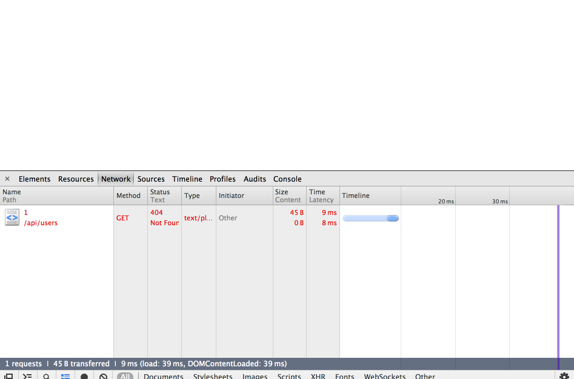
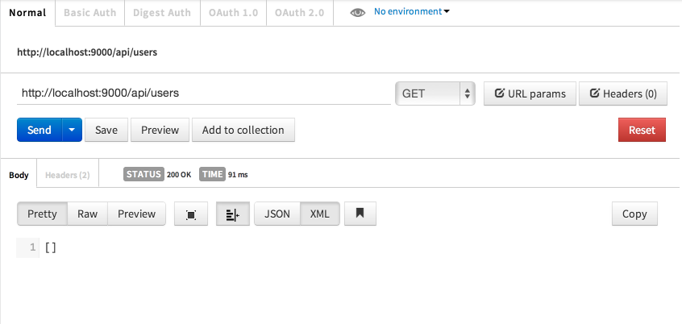
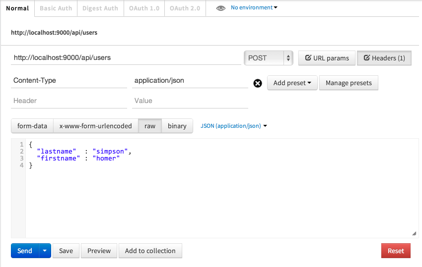

Objectives
- Extend the pacemaker-service application to incorporate service layer
- Utilize the layer in the pacemaker-android to retrieve a list of current users
Setup
This is v3 of the pacemaker-android project from the last android lab:
You can import this for reference purposes, or keep working with your own version.
Logout Feature
Currently the pacemaker-android app does not have an ability for a user to logout. Introduce the following changes to introduce this feature:
PacemakerApp
public class PacemakerApp extends Application
{
...
public void logout()
{
loggedInUser = null;
}
strings.xml
<string name="action_logout">Logout</string>
<string name="action_create_activities">Create Activity</string>
menu/activities_create.xml
<menu xmlns:android="http://schemas.android.com/apk/res/android" >
<item
android:id="@+id/action_settings"
android:orderInCategory="100"
android:showAsAction="never"
android:title="@string/action_settings"/>
<item
android:id="@+id/action_list_actvities"
android:orderInCategory="100"
android:showAsAction="never"
android:title="@string/action_list_activities"/>
<item
android:id="@+id/action_logout"
android:orderInCategory="100"
android:showAsAction="never"
android:title="@string/action_logout"/>
</menu>
menu/activities_list.xml
<menu xmlns:android="http://schemas.android.com/apk/res/android" >
<item
android:id="@+id/action_settings"
android:orderInCategory="100"
android:showAsAction="never"
android:title="@string/action_settings"/>
<item
android:id="@+id/action_create_actvities"
android:orderInCategory="100"
android:showAsAction="never"
android:title="@string/action_create_activities"/>
<item
android:id="@+id/action_logout"
android:orderInCategory="100"
android:showAsAction="never"
android:title="@string/action_logout"/>
</menu>
CreateActivity
@Override
public boolean onOptionsItemSelected(MenuItem item)
{
switch (item.getItemId())
{
case R.id.action_list_actvities : startActivity (new Intent(this, ActivitiesList.class));
break;
case R.id.action_logout : startActivity (new Intent(this, Welcome.class));
break;
}
return true;
}
ActivitiesList
@Override
public boolean onOptionsItemSelected(MenuItem item)
{
switch (item.getItemId())
{
case R.id.action_create_actvities : startActivity (new Intent(this, CreateActivity.class));
break;
case R.id.action_logout : startActivity (new Intent(this, Welcome.class));
break;
}
return true;
}
Seperated Activities by User
Currently a single list of activities is maintained, regardless of which user is logged on. We can easily refactor this by altering the data structure as follows:
PacemakerApp
private Map<String, List<Activity>> activities = new HashMap<String, List<Activity>>();
public void registerUser(User user)
{
users.put(user.email, user);
activities.put(user.email, new ArrayList<Activity>());
}
public void createActivity (Activity activity)
{
if (loggedInUser != null)
{
List<Activity> usersActivities = activities.get(loggedInUser.email);
activities.put(loggedInUser.email, usersActivities);
usersActivities.add(activity);
}
}
public List<Activity> getActivities()
{
List<Activity> usersActivities = null;
if (loggedInUser != null)
{
usersActivities = activities.get(loggedInUser.email);
}
return usersActivities;
}
JSON Parser Library
If we wish to build a service layer into pacemaker-service, then we need an agreed data format for exchanging objects. JSON is the accepted format for the style of interface we are proposing.
We need to extend the pacemaker-service project as follows:
pacemakerplay Project:
build.sbt
This is the build configuration for the application, which extend to incorporate the json library we have selected:
name := "pacemakerplay"
version := "1.0-SNAPSHOT"
libraryDependencies ++= Seq(
javaJdbc,
javaEbean,
cache,
"net.sf.flexjson" % "flexjson" % "3.1"
)
play.Project.playJavaSettings
The project will need to be rebuilt, and the eclipise view regenerated:
play
compile
eclipse
pacemaker-android
The Android project will need to use the same library:
Copy:
to 'lib' folder and add to build path.
JSon Parser Classes
Both projects can use the same serializers. Place this class in 'the models' package in both projects:
import java.util.ArrayList;
import java.util.List;
import flexjson.JSONDeserializer;
import flexjson.JSONSerializer;
public class JsonParser
{
public static JSONSerializer userSerializer = new JSONSerializer().exclude("class")
.exclude("persistent")
.exclude("entityId");
public static JSONSerializer activitySerializer = new JSONSerializer().exclude("class")
.exclude("persistent")
.exclude("entityId");
public static User json2User(String json)
{
return new JSONDeserializer<User>().deserialize(json, User.class);
}
public static List<User> json2Users(String json)
{
return new JSONDeserializer<ArrayList<User>>().use("values", User.class)
.deserialize(json);
}
public static String user2Json(Object obj)
{
return userSerializer.serialize(obj);
}
public static Activity json2Activity(String json)
{
Activity activity = new JSONDeserializer<Activity>().deserialize(json, Activity.class);
return activity;
}
public static String activity2Json(Object obj)
{
return activitySerializer.serialize(obj);
}
public static List<Activity> json2Activities (String json)
{
return new JSONDeserializer<ArrayList<Activity>>().use("values", Activity.class).deserialize(json);
}
}
pacemakerplay API
We now define the API proper in pacemaker-service"
Routes
# API
GET /api/users controllers.PacemakerAPI.users()
DELETE /api/users controllers.PacemakerAPI.deleteAllUsers()
POST /api/users controllers.PacemakerAPI.createUser()
GET /api/users/:id controllers.PacemakerAPI.user(id: Long)
DELETE /api/users/:id controllers.PacemakerAPI.deleteUser(id: Long)
PUT /api/users/:id controllers.PacemakerAPI.updateUser(id: Long)
GET /api/users/:userId/activities controllers.PacemakerAPI.activities(userId: Long)
POST /api/users/:userId/activities controllers.PacemakerAPI.createActivity(userId: Long)
GET /api/users/:userId/activities/:activityId controllers.PacemakerAPI.activity(userId: Long, activityId:Long)
DELETE /api/users/:userId/activities/:activityId controllers.PacemakerAPI.deleteActivity(userId: Long, activityId:Long)
PUT /api/users/:userId/activities/:activityId controllers.PacemakerAPI.updateActivity(userId: Long, activityId:Long)
PacemakerAPI
package controllers;
import static models.JsonParser.*;
import java.util.List;
import models.Activity;
import models.User;
import play.mvc.Controller;
import play.mvc.Result;
public class PacemakerAPI extends Controller
{
public static Result users()
{
List<User> users = User.findAll();
return ok(user2Json(users));
}
public static Result user(Long id)
{
User user = User.findById(id);
return user==null? notFound() : ok(user2Json(user));
}
public static Result createUser()
{
User user = json2User(request().body().asJson().toString());
user.save();
return ok(user2Json(user));
}
public static Result deleteUser(Long id)
{
Result result = notFound();
User user = User.findById(id);
if (user != null)
{
user.delete();
result = ok();
}
return result;
}
public static Result deleteAllUsers()
{
User.deleteAll();
return ok();
}
public static Result updateUser(Long id)
{
Result result = notFound();
User user = User.findById(id);
if (user != null)
{
User updatedUser = json2User(request().body().asJson().toString());
user.update(updatedUser);
user.save();
result = ok(user2Json(user));
}
return result;
}
public static Result activities (Long userId)
{
User p = User.findById(userId);
return ok(activity2Json(p.activities));
}
public static Result createActivity (Long userId)
{
User user = User.findById(userId);
Activity activity = json2Activity(request().body().asJson().toString());
user.activities.add(activity);
user.save();
return ok(activity2Json(activity));
}
public static Result activity (Long userId, Long activityId)
{
User user = User.findById(userId);
Activity activity = Activity.findById(activityId);
if (activity == null)
{
return notFound();
}
else
{
return user.activities.contains(activity)? ok(activity2Json(activity)): badRequest();
}
}
public static Result deleteActivity (Long userId, Long activityId)
{
User user = User.findById(userId);
Activity activity = Activity.findById(activityId);
if (activity == null)
{
return notFound();
}
else
{
if (user.activities.contains(activity))
{
user.activities.remove(activity);
activity.delete();
user.save();
return ok();
}
else
{
return badRequest();
}
}
}
public static Result updateActivity (Long userId, Long activityId)
{
User user = User.findById(userId);
Activity activity = Activity.findById(activityId);
if (activity == null)
{
return notFound();
}
else
{
if (user.activities.contains(activity))
{
Activity updatedActivity = json2Activity(request().body().asJson().toString());
activity.distance = updatedActivity.distance;
activity.location = updatedActivity.location;
activity.kind = updatedActivity.kind;
activity.save();
return ok(activity2Json(updatedActivity));
}
else
{
return badRequest();
}
}
}
}
Testing pacemakerplay API
Testing
Make sure the app is running, and browse to :
Viewing the page source, you should see:
[]
Also, if using chrome, keep an eye on the actual http traffic (via Tools menu ->Developers Tools):

Try browsing to this url:
The browser will be blank, however, the developer tools should display the actual response:

This reveals a '404' not found error.
More comprehensive tools for testing http interfaces are available. Search for the Chrome 'Postman REST Client' - and install as a chrome app on your workstation. Using Postman, experiment with the two links we tested above:

Now try to replicate the request as shown below (note the `Headers' Content-Type set to 'application/json':

When you press 'Send' you may see this response:

No try this request again:
In the above interchange, we have use the REST interface to create a User, and then subsequently get the user (by the id 1).
Create a few more users and verify that you can get them. See if you can also do the following:
- Delete (via a DELETE) request
- Update (via a PUT) request.
Also, examine the database via the h2-console, and see if you can verify if the 'my_users' table is being updated.
pacemaker-android HTTP package
We need new package of classes in the android application to converse with the pacemaker-service app:
Create a new package called 'org.pacemaker.http', and incorporate these classes:
package org.pacemaker.http;
import java.util.List;
import android.app.ProgressDialog;
import android.content.Context;
import android.os.AsyncTask;
@SuppressWarnings("rawtypes")
public abstract class Request extends AsyncTask<Object, Void, Object>
{
public Response responder;
public ProgressDialog dialog;
public Context context;
public String message;
public Exception error;
public Request(Context context, Response responder, String message)
{
this.responder = responder;
this.context = context;
this.message = message;
}
@Override
protected void onPreExecute()
{
super.onPreExecute();
this.dialog = new ProgressDialog(context, 1);
this.dialog.setMessage(message);
this.dialog.show();
}
@Override
protected Object doInBackground(Object... params)
{
error = null;
try
{
return doRequest(params);
}
catch (Exception e)
{
error = e;
}
return null;
}
protected abstract Object doRequest(Object... params) throws Exception;
@SuppressWarnings("unchecked")
@Override
protected void onPostExecute(Object result)
{
super.onPostExecute(result);
if (dialog.isShowing())
{
dialog.dismiss();
}
if (error != null)
{
responder.errorOccurred(error);
}
else
{
if (result instanceof List)
{
responder.setResponse((List)result);
}
else
{
responder.setResponse(result);
}
}
}
}
package org.pacemaker.http;
import java.util.List;
public interface Response<T>
{
public void setResponse(List<T> aList);
public void setResponse(T anObject);
public void errorOccurred (Exception e);
}
package org.pacemaker.http;
import org.apache.http.HttpResponse;
import org.apache.http.client.methods.HttpDelete;
import org.apache.http.client.methods.HttpGet;
import org.apache.http.client.methods.HttpPost;
import org.apache.http.client.methods.HttpPut;
import org.apache.http.entity.StringEntity;
import org.apache.http.impl.client.BasicResponseHandler;
import org.apache.http.impl.client.DefaultHttpClient;
import org.apache.http.params.BasicHttpParams;
import org.apache.http.params.HttpConnectionParams;
import org.apache.http.params.HttpParams;
public class Rest
{
private static DefaultHttpClient httpClient = null;
private static final String URL = "http://10.0.2.2:9000";
private static DefaultHttpClient httpClient()
{
if (httpClient == null)
{
HttpParams httpParameters = new BasicHttpParams();
HttpConnectionParams.setConnectionTimeout(httpParameters, 10000);
HttpConnectionParams.setSoTimeout(httpParameters, 10000);
httpClient = new DefaultHttpClient(httpParameters);
}
return httpClient;
}
public static String get(String path) throws Exception
{
HttpGet getRequest = new HttpGet(URL + path);
getRequest.setHeader("accept", "application/json");
HttpResponse response = httpClient().execute(getRequest);
return new BasicResponseHandler().handleResponse(response);
}
public static String delete(String path) throws Exception
{
HttpDelete deleteRequest = new HttpDelete(URL + path);
HttpResponse response = httpClient().execute(deleteRequest);
return new BasicResponseHandler().handleResponse(response);
}
public static String put(String path, String json) throws Exception
{
HttpPut putRequest = new HttpPut(URL + path);
putRequest.setHeader("Content-type", "application/json");
putRequest.setHeader("accept", "application/json");
StringEntity s = new StringEntity(json);
s.setContentEncoding("UTF-8");
s.setContentType("application/json");
putRequest.setEntity(s);
HttpResponse response = httpClient().execute(putRequest);
return new BasicResponseHandler().handleResponse(response);
}
public static String post(String path, String json) throws Exception
{
HttpPost putRequest = new HttpPost(URL + path);
putRequest.setHeader("Content-type", "application/json");
putRequest.setHeader("accept", "application/json");
StringEntity s = new StringEntity(json);
s.setContentEncoding("UTF-8");
s.setContentType("application/json");
putRequest.setEntity(s);
HttpResponse response = httpClient().execute(putRequest);
return new BasicResponseHandler().handleResponse(response);
}
}
PacemakerAPI Client
Create a new class in the 'org.pacemaker.main' package to encapsulate API access:
package org.pacemaker.main;
import java.util.List;
import org.pacemaker.http.Request;
import org.pacemaker.http.Response;
import org.pacemaker.http.Rest;
import org.pacemaker.models.JsonParser;
import org.pacemaker.models.User;
import android.content.Context;
public class PacemakerAPI
{
public static void getUsers(Context context, Response<User> response, String dialogMesssage)
{
new GetUsers(context, response, dialogMesssage).execute();
}
public static void createUser(Context context, Response<User> response, String dialogMesssage, User user)
{
new CreateUser(context, response, dialogMesssage).execute(user);
}
}
class GetUsers extends Request
{
public GetUsers(Context context, Response<User> callback, String message)
{
super(context, callback, message);
}
@Override
protected List<User> doRequest(Object... params) throws Exception
{
String response = Rest.get("/api/users");
List<User> userList = JsonParser.json2Users(response);
return userList;
}
}
class CreateUser extends Request
{
public CreateUser(Context context, Response<User> callback, String message)
{
super(context, callback, message);
}
@Override
protected User doRequest(Object... params) throws Exception
{
String response = Rest.post("/api/users", JsonParser.user2Json(params[0]));
return JsonParser.json2User(response);
}
}
Connect
In order to use network access from android, you will need to specifically enable it in the android manifest:
AndroidManifest.xml
<uses-permission android:name="android.permission.INTERNET"/>
Welcome Activity
We can now retrieve the users list from the welcome activity:
public void onCreate(Bundle savedInstanceState)
{
super.onCreate(savedInstanceState);
setContentView(R.layout.activity_welcome);
app = (PacemakerApp) getApplication();
PacemakerAPI.getUsers(this, app, "Retrieving list of users");
}
Note that the second paramater in the above - app - must implement the Response interface:
PacemakerApp
public class PacemakerApp extends Application implements Response<User>
{
private Map<String, User> users = new HashMap<String, User>();
private Map<String, List<Activity>> activities = new HashMap<String, List<Activity>>();
private User loggedInUser;
private boolean connected = false;
@Override
public void setResponse(List<User> aList)
{
connected = true;
for (User user : aList)
{
users.put(user.email, user);
}
}
@Override
public void setResponse(User anObject)
{
connected = true;
}
@Override
public void errorOccurred(Exception e)
{
connected = false;
Toast toast = Toast.makeText(this, "Failed to connect to Pacemaker Service", Toast.LENGTH_SHORT);
toast.show();
}
Exercises
Archive of the app so far:
Exercise 1: Users
Currently PacemakerApp.registerUser creates a local User object, and has no impact on the server. Change this such that, when registering a new user, the user object is created on the server.
Exercise 2: Activities
PacemakerApp.getActivities and PacemakerApp.createActivities are still just working with the local copies. Rework these such that they are creating/retreiving activities to/from the pacemakerplay service.